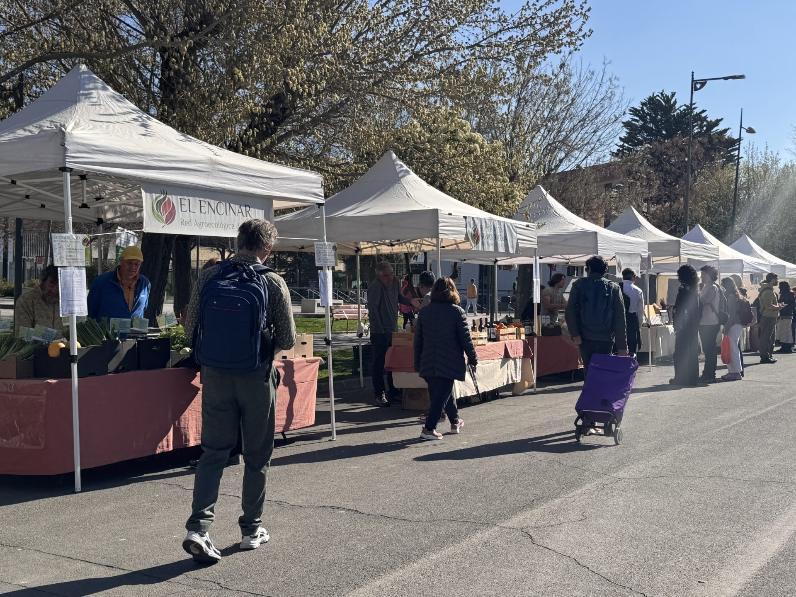

📅 Sábados 9:00–14:00 h
EcoMercado UGR
Paseíllos Universitarios, Campus Fuentenueva
Verdura y fruta ecológica de temporada, huevos, pan artesano, quesos, aceite de oliva virgen extra y conservas de productores de la comarca de Granada.